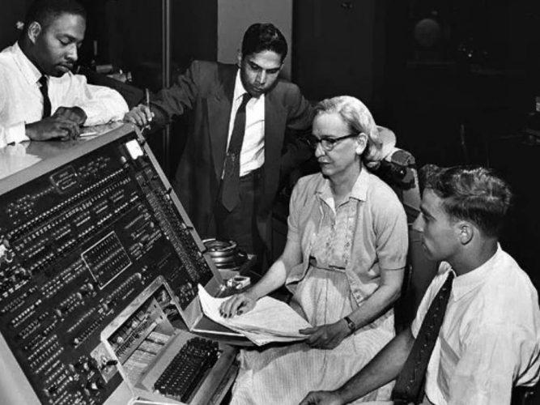

Les débuts de l'informatique.
Comment est venu ce nom ..?

Histoire de l'informatique
L'histoire de l'informatique est l'histoire de la science du traitement rationnel, notamment par machines automatiques de l'information. Le mot informatique a été crée en 1962 par Philippe Dreyfus. Il s'agit d'un néologisme de la langue française fait de la contraction des deux mots "automatique" et "information", les anglo-saxons utilisent les termes de "computer-science" ou de "data-processing".
Le développement de l'informatique est lié à la recherche fondamentale en mathématiques et plus précisément à la logique et aux algorithmes mathématiques, apparus
au début du 9ème siècle avec les travaux du mathématicien arabe Abu Jaffar Al Khawarizmi.
L'informatique a bénéficié en outre de l'introduction du calcul binaire en Europe vers 1967, grâce aux travaux de Gottfred Wilhelm Leibnig, à la formalisation du principale des machines à calculer
par Ado Lovelace en 1840 et à la théorisation de la logique binaire par George Boole en 1854.
Au départ, l'informatique a principalement deux usages, le calcul scientifique (pour des usages aussi bien civils que militaires, stimulés par la guerre froide)
et l'aide à la gestion des entreprises, en prenant la relève de la mécanographie. En anglais on distingue deux domaines : Computer-Science et Information Systems.
La fin des années 1960 est marquée par une bulle spéculative sur les sociétées d'électronique découlant de l'apparition des circuits intégrés produits à grande échelle,
et surtout de nouveaux modes d'utilisation de l'ordinateur, notamment en temps partagé sur des terminaux distants.
De nouvelles machines permettent d'automatiser des calculs fait précédemment par des pools de calculateurs humains dans les entreprises, les universités, les organismes de rechercher.
Le ministère de la Défense aux Etats-Unis a subventionné de gros programmes de recherche et programmation, en reconnaissance des formes et intelligence artificielle,
en codage et cryptographie, en traduction automatique des langues, qui ont permis le décollage des applications informatiques.
En France, à plus petite échelle, au milieu des années 1960, la diversification des applications se combine avec l'attrait de l'ordinateur pour divers projets scientifiques
(de la logique à la linguistique). Mais il faudra plus de dix ans pour que les grandes institutions scientifiques admettent officiellement l'idée que l'informatique est une nouvelle science.